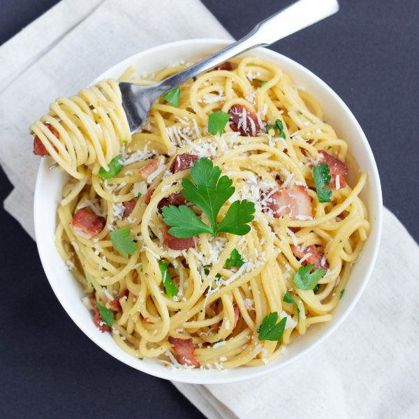

Garlicky Spaghetti Parmesan Carbonara

Total Time
35 min
Nutrition (per serving)
691.8 kcalCalories
30.3 gProtein
57.1 gCarbs
37.2 gFat
Full nutrition table
| Calories | 691.8 kcal |
| Total fat | 37.2 g |
| Saturated fat | 15.1 g |
| Trans fat | 0.4 g |
| Cholesterol | 230.4 mg |
| Sodium | 452.6 mg |
| Carbohydrates | 57.1 g |
| Fiber | 2.9 g |
| Sugars | 3.4 g |
| Protein | 30.3 g |
| Potassium | 453.1 mg |
| Calcium | 78.3 mg |
| Iron | 4.5 mg |
| Vitamin A | 591.4 IU |
| Vitamin C | 21 mg |
| Vitamin D | 52.1 IU |
Cookware
Ingredients
- 8 slicesbacon
- 4eggs
- 4 clovesgarlic
- 1 ½ fl ozheavy whipping cream
- 1 small bunchItalian (flat-leaf) parsley
- 3 ozParmesan cheese
- 10 ozspaghetti pasta
- black pepper
- salt
Steps
- Fill a large pot halfway with water, season water with salt, cover and bring to a boil. Add pasta and stir for a few seconds. Cook, uncovered, until desired firmness, 8-10 minutes.2 tsp salt
10 oz spaghetti pasta - While pasta is cooking, preheat a skillet over medium-high heat.
- Chop the bacon into 1-inch pieces; add to the skillet and cook until crispy, 4-5 minutes. Once done, transfer to a plate lined with paper towels. Reserve 2 tbsp of bacon fat.8 slices bacon
- Meanwhile, crack the eggs into a medium bowl; add 3 tbsp cream and whisk to combine.4 eggs
1 ½ fl oz heavy cream - Finely grate Parmesan and transfer to the bowl with egg mixture. Season with salt and pepper; whisk to combine.3 oz Parmesan cheese
1 tsp salt
½ tsp black pepper - When pasta is done, drain in a colander, reserving ½ cup of cooking liquid.
- Trim off and discard the root ends of the garlic; peel and mince or press the garlic.4 cloves garlic
- Add the reserved bacon fat to empty pasta pot. Return pot to heat, reduce heat to low. Add garlic, stirring until fragrant, about 1-2 minutes.
- Return pasta and bacon to pot. Remove pot from heat, add the egg mixture to pasta, stirring frequently. Stir just until the egg mixture begins to thicken, 3-4 minutes.
- If the sauce seems dry, add some of the reserved pasta water 1 tbsp at a time, until rich and creamy.
- Wash and dry parsley. Shave leaves off the stems; discard the stems and mince the leaves. Reserve a small amount for garnish and add the rest to the pot with the pasta.1 small bunch Italian (flat-leaf) parsley
- To serve, divide pasta between bowls and garnish with remaining parsley. Enjoy!